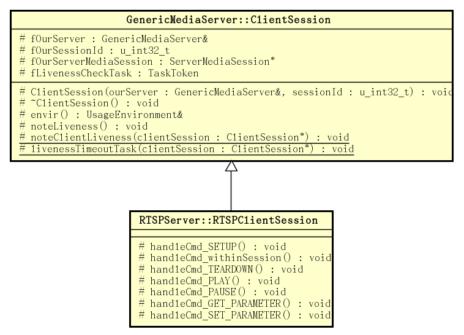

1. Live555 Source code analysis: RTSPServer
Posted on 2017-09-03 | In live555
Live555 uses the RTSP/RTP/RTCP protocol for streaming media, where RTSP is used
to establish streaming sessions and control streaming sessions. In live555 by
class RTSPServerSupportingHTTPStreaming::RTSPClientConnectionSupportingHTTPStreaming to
handle the RTSP request. Request sent by the client in the parent
class GenericMediaServer::ClientConnectionof incomingRequestHandler(void*, int /*mask*/) receiver functions, and its parent class RTSPServer::RTSPClientConnection function handleRequestBytes() processing.
In particular look at GenericMediaServer::ClientConnection the incomingRequestHandler(void*, int /*mask*/) before implementation of a function, we first look at the format RTSP message.
The RTSP message is divided into a request message and a response message. The
format of the request message sent from the client to the server is as follows:
Request = Request-Line
*( general-header
| request-header
| entity-header )
CRLF
[ message-body ]
The first line of the request message is the request line, which contains the
method to be applied to the resource, the identifier of the resource, which is
the URL, and the protocol used. The specific format of the request line is as
follows:
Request-Line = Method SP Request-URI SP RTSP-Version CRLF
The SP in the above format represents a space, that is, the different elements
in the request line are separated by spaces and \n\rend with CRLF. The methods
supported by RTSP mainly include the following:
Method = "DESCRIBE"
| "ANNOUNCE"
| "GET_PARAMETER"
| "OPTIONS"
| "PAUSE"
| "PLAY"
| "RECORD"
| "REDIRECT"
| "SETUP"
| "SET_PARAMETER"
| "TEARDOWN"
| extension-method
extension-method = token
The format of the URI is:
Request-URI = "*" | absolute_URI
That is, it can be "*" or a complete URI, where the former indicates that the
operation applies to all resources.
The format of the RTSP version number is:
RTSP-Version = "RTSP" "/" 1*DIGIT "." 1*DIGIT
That is, the string "RTSP/" is followed by two integers separated by a period
(".").
After the request line is the header. The headers are divided into three
categories, namely the generic header, the request header, and the entity
header. The generic header mainly contains the following:
general-header = Cache-Control
| Connection
| Date
| Via
The request header has the following:
request-header = Accept
| Accept-Encoding
| Accept-Language
| Authorization
| From
| If-Modified-Since
| Range
| Referer
| User-Agent
The entity headers include these:
entity-header = Allow
| Content-Base
| Content-Encoding
| Content-Language
| Content-Length
| Content-Location
| Content-Type
| Expires
| Last-Modified
| extension-header
extension-header = message-header
Each head also ends with a CRLF. After all the headers, you need to add another
CRLF to separate the header from the message body. At the end of the message
body, CRLF is also added as the end.
The request message structure of RTSP is very similar to that of HTTP.
OPTIONS Request message example:
OPTIONS rtsp://10.240.248.20:8554/raw_h264_stream.264 RTSP/1.0
CSeq: 1
User-Agent: Lavf56.40.101
DESCRIBE Request message example:
DESCRIBE rtsp://10.240.248.20:8554/raw_h264_stream.264 RTSP/1.0
Accept: application/sdp
CSeq: 2
User-Agent: Lavf56.40.101
SETUP Request message example:
SETUP rtsp://10.240.248.20:8554/raw_h264_stream.264/track1 RTSP/1.0
Transport: RTP/AVP/UDP;unicast;client_port=27056-27057
CSeq: 3
User-Agent: Lavf56.40.101
PLAY Request message example:
PLAY rtsp://10.240.248.20:8554/raw_h264_stream.264/ RTSP/1.0
Range: npt=0.000-
CSeq: 4
User-Agent: Lavf56.40.101
Session: 92C91EC2
The response message format is as follows:
Response = Status-Line
*( general-header
| response-header
| entity-header )
CRLF
[ message-body ]
The first line of the response message is the status line, which is described by
the protocol version number, the numeric status code, and the text format
associated with the status code. The specific format is defined as follows:
Status-Line = RTSP-Version SP Status-Code SP Reason-Phrase CRLF
Following the status line is the header, which is similar to the header of the
request message, except that the request header is replaced with the response
header. The response header mainly includes the following:
response-header = Location
| Proxy-Authenticate
| Public
| Retry-After
| Server
| Vary
| WWW-Authenticate
Each head also ends with a CRLF. After all the headers, you need to add another
CRLF to separate the header from the message body. At the end of the message
body, CRLF is also added as the end.
OPTIONS Example response message:
RTSP/1.0 200 OK
CSeq: 1
Date: Fri, Sep 01 2017 07:18:16 GMT
Public: OPTIONS, DESCRIBE, SETUP, TEARDOWN, PLAY, PAUSE, GET_PARAMETER, SET_PARAMETER
DESCRIBE Example response message:
RTSP/1.0 200 OK
CSeq: 2
Date: Fri, Sep 01 2017 07:18:16 GMT
Content-Base: rtsp://10.240.248.20:8554/raw_h264_stream.264/
Content-Type: application/sdp
Content-Length: 531
v=0
o=- 1504250296129739 1 IN IP4 10.240.248.20
s=H.264 Video, streamed by the LIVE555 Media Server
i=raw_h264_stream.264
t=0 0
a=tool:LIVE555 Streaming Media v2017.07.18
a=type:broadcast
a=control:*
a=range:npt=0-
a=x-qt-text-nam:H.264 Video, streamed by the LIVE555 Media Server
a=x-qt-text-inf:raw_h264_stream.264
m=video 0 RTP/AVP 96
c=IN IP4 0.0.0.0
b=AS:500
a=rtpmap:96 H264/90000
a=fmtp:96 packetization-mode=1;profile-level-id=42802A;sprop-parameter-sets=Z0KAKtoBEA8eXlIKDAoNoUJq,aM4G4g==
a=control:track1
RTSPClientConnection[0x8018c0]::handleRequestBytes() read 163 new bytes:SETUP rtsp://10.240.248.20:8554/raw_h264_stream.264/track1 RTSP/1.0
Transport: RTP/AVP/UDP;unicast;client_port=27056-27057
CSeq: 3
User-Agent: Lavf56.40.101
In this response, the message body is an SDP message.
SETUP Example response message:
RTSP/1.0 200 OK
CSeq: 3
Date: Fri, Sep 01 2017 07:18:16 GMT
Transport: RTP/AVP;unicast;destination=10.240.248.20;source=10.240.248.20;client_port=27056-27057;server_port=6970-6971
Session: 92C91EC2;timeout=65
PLAY Example response message:
RTSP/1.0 200 OK
CSeq: 4
Date: Fri, Sep 01 2017 07:18:16 GMT
Range: npt=0.000-
Session: 92C91EC2
RTP-Info: url=rtsp://10.240.248.20:8554/raw_h264_stream.264/track1;seq=32567;rtptime=2735105232
This is basically the case with the RTSP message format.
1.2. RTSP request processing
With the knowledge of the RTSP message format, look at RTSPServer the processing
functions for RTSP messages in live555 RTSPServer::RTSPClientConnection::handleRequestBytes().
The definition of this function is a bit long, throwing away the processing of
HTTP. The processing logic of RTSP is as follows:
void RTSPServer::RTSPClientConnection::handleRequestBytes(int newBytesRead) {
int numBytesRemaining = 0;
++fRecursionCount;
do {
RTSPServer::RTSPClientSession* clientSession = NULL;
if (newBytesRead < 0 || (unsigned)newBytesRead >= fRequestBufferBytesLeft) {
// Either the client socket has died, or the request was too big for us.
// Terminate this connection:
#ifdef DEBUG
fprintf(stderr, "RTSPClientConnection[%p]::handleRequestBytes() read %d new bytes (of %d); terminating connection!\n", this, newBytesRead, fRequestBufferBytesLeft);
#endif
fIsActive = False;
break;
}
Boolean endOfMsg = False;
unsigned char* ptr = &fRequestBuffer[fRequestBytesAlreadySeen];
#ifdef DEBUG
ptr[newBytesRead] = '\0';
fprintf(stderr, "RTSPClientConnection[%p]::handleRequestBytes() %s %d new bytes:%s\n",
this, numBytesRemaining > 0 ? "processing" : "read", newBytesRead, ptr);
#endif
. . . . . .
unsigned char* tmpPtr = fLastCRLF + 2;
if (fBase64RemainderCount == 0) { // no more Base-64 bytes remain to be read/decoded
// Look for the end of the message: <CR><LF><CR><LF>
if (tmpPtr < fRequestBuffer)
tmpPtr = fRequestBuffer;
while (tmpPtr < &ptr[newBytesRead - 1]) {
if (*tmpPtr == '\r' && *(tmpPtr + 1) == '\n') {
if (tmpPtr - fLastCRLF == 2) { // This is it:
endOfMsg = True;
break;
}
fLastCRLF = tmpPtr;
}
++tmpPtr;
}
}
fRequestBufferBytesLeft -= newBytesRead;
fRequestBytesAlreadySeen += newBytesRead;
if (!endOfMsg) break; // subsequent reads will be needed to complete the request
// Parse the request string into command name and 'CSeq', then handle the command:
fRequestBuffer[fRequestBytesAlreadySeen] = '\0';
char cmdName[RTSP_PARAM_STRING_MAX];
char urlPreSuffix[RTSP_PARAM_STRING_MAX];
char urlSuffix[RTSP_PARAM_STRING_MAX];
char cseq[RTSP_PARAM_STRING_MAX];
char sessionIdStr[RTSP_PARAM_STRING_MAX];
unsigned contentLength = 0;
fLastCRLF[2] = '\0'; // temporarily, for parsing
Boolean parseSucceeded = parseRTSPRequestString(
(char*) fRequestBuffer,
fLastCRLF + 2 - fRequestBuffer,
cmdName, sizeof cmdName,
urlPreSuffix, sizeof urlPreSuffix,
urlSuffix, sizeof urlSuffix,
cseq, sizeof cseq,
sessionIdStr, sizeof sessionIdStr,
contentLength);
fLastCRLF[2] = '\r'; // restore its value
Boolean playAfterSetup = False;
if (parseSucceeded) {
#ifdef DEBUG
fprintf(stderr, "parseRTSPRequestString() succeeded, returning cmdName \"%s\", urlPreSuffix \"%s\", urlSuffix \"%s\", CSeq \"%s\", Content-Length %u, with %d bytes following the message.\n", cmdName, urlPreSuffix, urlSuffix, cseq, contentLength, ptr + newBytesRead - (tmpPtr + 2));
#endif
// If there was a "Content-Length:" header, then make sure we've received all of the data that it specified:
if (ptr + newBytesRead < tmpPtr + 2 + contentLength) break; // we still need more data; subsequent reads will give it to us
// If the request included a "Session:" id, and it refers to a client session that's
// current ongoing, then use this command to indicate 'liveness' on that client session:
Boolean const requestIncludedSessionId = sessionIdStr[0] != '\0';
if (requestIncludedSessionId) {
clientSession
= (RTSPServer::RTSPClientSession*)(fOurRTSPServer.lookupClientSession(sessionIdStr));
if (clientSession != NULL) clientSession->noteLiveness();
}
// We now have a complete RTSP request.
// Handle the specified command (beginning with commands that are session-independent):
fCurrentCSeq = cseq;
if (strcmp(cmdName, "OPTIONS") == 0) {
// If the "OPTIONS" command included a "Session:" id for a session that doesn't exist,
// then treat this as an error:
if (requestIncludedSessionId && clientSession == NULL) {
handleCmd_sessionNotFound();
} else {
// Normal case:
handleCmd_OPTIONS();
}
} else if (urlPreSuffix[0] == '\0' && urlSuffix[0] == '*'
&& urlSuffix[1] == '\0') {
// The special "*" URL means: an operation on the entire server. This works only for GET_PARAMETER and SET_PARAMETER:
if (strcmp(cmdName, "GET_PARAMETER") == 0) {
handleCmd_GET_PARAMETER((char const*) fRequestBuffer);
} else if (strcmp(cmdName, "SET_PARAMETER") == 0) {
handleCmd_SET_PARAMETER((char const*) fRequestBuffer);
} else {
handleCmd_notSupported();
}
} else if (strcmp(cmdName, "DESCRIBE") == 0) {
handleCmd_DESCRIBE(urlPreSuffix, urlSuffix,
(char const*) fRequestBuffer);
} else if (strcmp(cmdName, "SETUP") == 0) {
Boolean areAuthenticated = True;
if (!requestIncludedSessionId) {
// No session id was present in the request.
// So create a new "RTSPClientSession" object for this request.
// But first, make sure that we're authenticated to perform this command:
char urlTotalSuffix[2 * RTSP_PARAM_STRING_MAX];
// enough space for urlPreSuffix/urlSuffix'\0'
urlTotalSuffix[0] = '\0';
if (urlPreSuffix[0] != '\0') {
strcat(urlTotalSuffix, urlPreSuffix);
strcat(urlTotalSuffix, "/");
}
strcat(urlTotalSuffix, urlSuffix);
if (authenticationOK("SETUP", urlTotalSuffix,
(char const*) fRequestBuffer)) {
clientSession =
(RTSPServer::RTSPClientSession*) fOurRTSPServer.createNewClientSessionWithId();
} else {
areAuthenticated = False;
}
}
if (clientSession != NULL) {
clientSession->handleCmd_SETUP(this, urlPreSuffix, urlSuffix,
(char const*) fRequestBuffer);
playAfterSetup = clientSession->fStreamAfterSETUP;
} else if (areAuthenticated) {
handleCmd_sessionNotFound();
}
} else if (strcmp(cmdName, "TEARDOWN") == 0
|| strcmp(cmdName, "PLAY") == 0 || strcmp(cmdName, "PAUSE") == 0
|| strcmp(cmdName, "GET_PARAMETER") == 0
|| strcmp(cmdName, "SET_PARAMETER") == 0) {
if (clientSession != NULL) {
clientSession->handleCmd_withinSession(this, cmdName, urlPreSuffix,
urlSuffix, (char const*) fRequestBuffer);
} else {
handleCmd_sessionNotFound();
}
} else if (strcmp(cmdName, "REGISTER") == 0 || strcmp(cmdName, "DEREGISTER") == 0) {
// Because - unlike other commands - an implementation of this command needs
// the entire URL, we re-parse the command to get it:
char* url = strDupSize((char*) fRequestBuffer);
if (sscanf((char*) fRequestBuffer, "%*s %s", url) == 1) {
// Check for special command-specific parameters in a "Transport:" header:
Boolean reuseConnection, deliverViaTCP;
char* proxyURLSuffix;
parseTransportHeaderForREGISTER((const char*) fRequestBuffer,
reuseConnection, deliverViaTCP, proxyURLSuffix);
handleCmd_REGISTER(cmdName, url, urlSuffix,
(char const*) fRequestBuffer, reuseConnection, deliverViaTCP,
proxyURLSuffix);
delete[] proxyURLSuffix;
} else {
handleCmd_bad();
}
delete[] url;
} else {
// The command is one that we don't handle:
handleCmd_notSupported();
}
}
. . . . . .
#ifdef DEBUG
fprintf(stderr, "sending response: %s", fResponseBuffer);
#endif
send(fClientOutputSocket, (char const*)fResponseBuffer, strlen((char*)fResponseBuffer), 0);
if (playAfterSetup) {
// The client has asked for streaming to commence now, rather than after a
// subsequent "PLAY" command. So, simulate the effect of a "PLAY" command:
clientSession->handleCmd_withinSession(this, "PLAY", urlPreSuffix, urlSuffix, (char const*)fRequestBuffer);
}
// Check whether there are extra bytes remaining in the buffer, after the end of the request (a rare case).
// If so, move them to the front of our buffer, and keep processing it, because it might be a following, pipelined request.
unsigned requestSize = (fLastCRLF+4-fRequestBuffer) + contentLength;
numBytesRemaining = fRequestBytesAlreadySeen - requestSize;
resetRequestBuffer(); // to prepare for any subsequent request
if (numBytesRemaining > 0) {
memmove(fRequestBuffer, &fRequestBuffer[requestSize], numBytesRemaining);
newBytesRead = numBytesRemaining;
}
} while (numBytesRemaining > 0);
--fRecursionCount;
if (!fIsActive) {
if (fRecursionCount > 0) closeSockets(); else delete this;
// Note: The "fRecursionCount" test is for a pathological situation where we reenter the event loop and get called recursively
// while handling a command (e.g., while handling a "DESCRIBE", to get a SDP description).
// In such a case we don't want to actually delete ourself until we leave the outermost call.
}
}
This function will process the complete RTSP message stored in the buffer from
the socket one by one through a do-while loop. At the beginning of the loop
body, RTSPServer::RTSPClientConnection::handleRequestBytes() first find the end
position of the request message header, which is achieved by the following code:
unsigned char* tmpPtr = fLastCRLF + 2;
if (fBase64RemainderCount == 0) { // no more Base-64 bytes remain to be read/decoded
// Look for the end of the message: <CR><LF><CR><LF>
if (tmpPtr < fRequestBuffer)
tmpPtr = fRequestBuffer;
while (tmpPtr < &ptr[newBytesRead - 1]) {
if (*tmpPtr == '\r' && *(tmpPtr + 1) == '\n') {
if (tmpPtr - fLastCRLF == 2) { // This is it:
endOfMsg = True;
break;
}
fLastCRLF = tmpPtr;
}
++tmpPtr;
}
}
fRequestBufferBytesLeft -= newBytesRead;
fRequestBytesAlreadySeen += newBytesRead;
if (!endOfMsg) break; // subsequent reads will be needed to complete the request
A portion of the front RTSP message format, we know, RTSP request message header
are two continuous "\n \r", i.e. <CR><LF><CR><LF> the end of the
message to find the end position, i.e. the position of this sequence is
found, fLastCRLF points to the beginning of this sequence position.
If the end position of the request message header is not found, that is, the
data read from the socket does not contain the complete message header, and some
of the message has not been read yet, and the loop end processing will be
skipped.
After finding the end position of the request message header, it is to parse out
different elements from the message header. This is mainly through
the parseRTSPRequestString() function completes:
// Parse the request string into command name and 'CSeq', then handle the command:
fRequestBuffer[fRequestBytesAlreadySeen] = '\0';
char cmdName[RTSP_PARAM_STRING_MAX];
char urlPreSuffix[RTSP_PARAM_STRING_MAX];
char urlSuffix[RTSP_PARAM_STRING_MAX];
char cseq[RTSP_PARAM_STRING_MAX];
char sessionIdStr[RTSP_PARAM_STRING_MAX];
unsigned contentLength = 0;
fLastCRLF[2] = '\0'; // temporarily, for parsing
Boolean parseSucceeded = parseRTSPRequestString(
(char*) fRequestBuffer,
fLastCRLF + 2 - fRequestBuffer,
cmdName, sizeof cmdName,
urlPreSuffix, sizeof urlPreSuffix,
urlSuffix, sizeof urlSuffix,
cseq, sizeof cseq,
sessionIdStr, sizeof sessionIdStr,
contentLength);
fLastCRLF[2] = '\r'; // restore its value
This is not to parse out all the elements in the RTSP message header, but to
parse out several elements in the RTSP message header that determine what to do
next, including the requested Method, URL, CSeq and SessionId, message body
length ContentLength, and so on. The parsing success indicates that the message
is a valid RTSP message, otherwise it is an HTTP message. Here we only look at
the processing in the case of successful resolution.
After the parsing succeeds, it will first determine whether the message body is
complete: at this time (ptr + newBytesRead) points to the end position of the
data read in the buffer, tmpPtr pointing to the two "\n\r" sequences in the end
of the message header. that, i.e., the last message header <CR><LF>, this
comparison (ptr + newBytesRead) and (tmpPtr + 2 + contentLength) to determine
whether the message buffer full.
When the same message is incomplete, it jumps out of the loop and ends
processing.
Then, when the processing of the message needs to establish a streaming media
session, the established streaming media session is first searched, and a
keep-alive operation is performed for the session.
Subsequent processing is performed according to the type of RTSP request
message.
1.3. Processing of OPTIONS requests
OPTIONS The request is processed as follows:
if (strcmp(cmdName, "OPTIONS") == 0) {
// If the "OPTIONS" command included a "Session:" id for a session that doesn't exist,
// then treat this as an error:
if (requestIncludedSessionId && clientSession == NULL) {
handleCmd_sessionNotFound();
} else {
// Normal case:
handleCmd_OPTIONS();
}
}
According to the specification, OPTIONS the request may be initiated at any stage
of the streaming media session, when the request header contains SessionId time
but can not find the corresponding client session
configuration, handleCmd_sessionNotFound() processed:
void RTSPServer::RTSPClientConnection::handleCmd_sessionNotFound() {
setRTSPResponse("454 Session Not Found");
}
. . . . . .
void RTSPServer::RTSPClientConnection::setRTSPResponse(
char const* responseStr) {
snprintf((char*) fResponseBuffer, sizeof fResponseBuffer,
"RTSP/1.0 %s\r\n"
"CSeq: %s\r\n"
"%s\r\n",
responseStr,
fCurrentCSeq,
dateHeader());
}
Wherein the dateHeader() return RTSP Datehead, wherein the current time is the
time string RTSP header time format:
char const* dateHeader() {
static char buf[200];
#if !defined(_WIN32_WCE)
time_t tt = time(NULL);
strftime(buf, sizeof buf, "Date: %a, %b %d %Y %H:%M:%S GMT\r\n", gmtime(&tt));
#else
. . . . . .
#endif
return buf;
}
handleCmd_sessionNotFound() The process that is the fResponseBuffer response to an
error message 454 is filled RTSP.
Normally, the handleCmd_OPTIONS() processing request:
char const* RTSPServer::allowedCommandNames() {
return "OPTIONS, DESCRIBE, SETUP, TEARDOWN, PLAY, PAUSE, GET_PARAMETER, SET_PARAMETER";
}
. . . . . .
void RTSPServer::RTSPClientConnection::handleCmd_OPTIONS() {
snprintf((char*) fResponseBuffer, sizeof fResponseBuffer,
"RTSP/1.0 200 OK\r\nCSeq: %s\r\n%sPublic: %s\r\n\r\n", fCurrentCSeq,
dateHeader(), fOurRTSPServer.allowedCommandNames());
}
This is the fResponseBuffer response message filling a successful RTSP, wherein
the Public header contains all RTSP Methods RTSP server supports.
1.4. Processing of requests applied to the entire server
The special URL "*" indicates that the requested operation is applied to the
entire server. According to RTSP specification, only two operations can be
applied to the entire server, i.e., GET_PARAMETER, and SET_PARAMETER.
It applies to the entire server GET_PARAMETER and SET_PARAMETER process requests
as follows:
} else if (urlPreSuffix[0] == '\0' && urlSuffix[0] == '*'
&& urlSuffix[1] == '\0') {
// The special "*" URL means: an operation on the entire server. This works only for GET_PARAMETER and SET_PARAMETER:
if (strcmp(cmdName, "GET_PARAMETER") == 0) {
handleCmd_GET_PARAMETER((char const*) fRequestBuffer);
} else if (strcmp(cmdName, "SET_PARAMETER") == 0) {
handleCmd_SET_PARAMETER((char const*) fRequestBuffer);
} else {
handleCmd_notSupported();
}
}
Here by invoking handleCmd_GET_PARAMETER() and handleCmd_SET_PARAMETER() to
process GET_PARAMETER and SET_PARAMETER requests:
void RTSPServer::RTSPClientConnection
::handleCmd_GET_PARAMETER(char const* /*fullRequestStr*/) {
// By default, we implement "GET_PARAMETER" (on the entire server) just as a 'no op', and send back a dummy response.
// (If you want to handle this type of "GET_PARAMETER" differently, you can do so by defining a subclass of "RTSPServer"
// and "RTSPServer::RTSPClientConnection", and then reimplement this virtual function in your subclass.)
setRTSPResponse("200 OK", LIVEMEDIA_LIBRARY_VERSION_STRING);
}
void RTSPServer::RTSPClientConnection
::handleCmd_SET_PARAMETER(char const* /*fullRequestStr*/) {
// By default, we implement "SET_PARAMETER" (on the entire server) just as a 'no op', and send back an empty response.
// (If you want to handle this type of "SET_PARAMETER" differently, you can do so by defining a subclass of "RTSPServer"
// and "RTSPServer::RTSPClientConnection", and then reimplement this virtual function in your subclass.)
setRTSPResponse("200 OK");
}
. . . . . .
void RTSPServer::RTSPClientConnection
::setRTSPResponse(char const* responseStr, char const* contentStr) {
if (contentStr == NULL) contentStr = "";
unsigned const contentLen = strlen(contentStr);
snprintf((char*) fResponseBuffer, sizeof fResponseBuffer,
"RTSP/1.0 %s\r\n"
"CSeq: %s\r\n"
"%s"
"Content-Length: %d\r\n\r\n"
"%s",
responseStr,
fCurrentCSeq,
dateHeader(),
contentLen,
contentStr);
}
live555 liveMedia library RTSPServer::RTSPClientConnection itself does not
realize GET_PARAMETER and SET_PARAMETER requests. If the application needs to
provide two methods to achieve this, we need to inherit RTSPServer and RTSPServer::RTSPClientConnection, and to implement the corresponding virtual functions.
By default, the processing GET_PARAMETER time, RTSPServer::RTSPClientConnection the repository is
returned to the client, to SET_PARAMETER request, always return success.
1.5. Processing of DESCRIBE requests
DESCRIBE The request is processed as follows:
} else if (strcmp(cmdName, "DESCRIBE") == 0) {
handleCmd_DESCRIBE(urlPreSuffix, urlSuffix,
(char const*) fRequestBuffer);
}
Here by the handleCmd_DESCRIBE() handler DESCRIBE message.
1.6. Processing of SETUP requests
The SETUP request is processed as follows:
} else if (strcmp(cmdName, "SETUP") == 0) {
Boolean areAuthenticated = True;
if (!requestIncludedSessionId) {
// No session id was present in the request.
// So create a new "RTSPClientSession" object for this request.
// But first, make sure that we're authenticated to perform this command:
char urlTotalSuffix[2 * RTSP_PARAM_STRING_MAX];
// enough space for urlPreSuffix/urlSuffix'\0'
urlTotalSuffix[0] = '\0';
if (urlPreSuffix[0] != '\0') {
strcat(urlTotalSuffix, urlPreSuffix);
strcat(urlTotalSuffix, "/");
}
strcat(urlTotalSuffix, urlSuffix);
if (authenticationOK("SETUP", urlTotalSuffix,
(char const*) fRequestBuffer)) {
clientSession =
(RTSPServer::RTSPClientSession*) fOurRTSPServer.createNewClientSessionWithId();
} else {
areAuthenticated = False;
}
}
if (clientSession != NULL) {
clientSession->handleCmd_SETUP(this, urlPreSuffix, urlSuffix,
(char const*) fRequestBuffer);
playAfterSetup = clientSession->fStreamAfterSETUP;
} else if (areAuthenticated) {
handleCmd_sessionNotFound();
}
}
If SETUP the request without SessionID, it means that streaming media session has
not been created, then there will first attempt to create a streaming media
session request. The process of creation is as follows:
The request is first authenticated. After authentication requires the full
path portion of the URL, parses the request header, urlPreSuffix a save
request path portion of the URL, all portions of the path in front of the
last component, while urlSuffixthe last part of the path component of the
URL is saved. Such as a URL
rtsp://10.240.248.20:8554/raw_h264_stream.264, urlPreSuffix an empty
string "", urlSuffix as "raw_h264_stream.264", for the
URL rtsp://10.240.248.20:8000/video/raw_h264_stream.264, urlPreSuffix an
empty string "video", urlSuffix is "raw_h264_stream.264". Thus before
certification, will again spell out the first full path portion of the URL,
and then through authenticationOK() the implementation of certification.
“LIVE555 Media Server” does not provide authentication and authentication
will always succeed. The certification process is not analyzed in detail
here.
When requesting authentication is successful, through the GenericMediaServer::createNewClientSessionWithId()
creation RTSPServer::RTSPClientSession object. GenericMediaServer In ClientSession several related function the following statement:
virtual ClientSession* createNewClientSession(u_int32_t sessionId) = 0;
ClientSession* createNewClientSessionWithId();
// Generates a new (unused) random session id, and calls the "createNewClientSession()"
// virtual function with this session id as parameter.
// Lookup a "ClientSession" object by sessionId (integer, and string):
ClientSession* lookupClientSession(u_int32_t sessionId);
ClientSession* lookupClientSession(char const* sessionIdStr);
createNewClientSession() It is a pure virtual function, createNewClientSessionWithId() and two lookupClientSession() non-virtual functions.
GenericMediaServer::createNewClientSessionWithId() The function is defined as
follows:
GenericMediaServer::ClientSession* GenericMediaServer::createNewClientSessionWithId() {
u_int32_t sessionId;
char sessionIdStr[8+1];
// Choose a random (unused) 32-bit integer for the session id
// (it will be encoded as a 8-digit hex number). (We avoid choosing session id 0,
// because that has a special use by some servers.)
do {
sessionId = (u_int32_t)our_random32();
snprintf(sessionIdStr, sizeof sessionIdStr, "%08X", sessionId);
} while (sessionId == 0 || lookupClientSession(sessionIdStr) != NULL);
ClientSession* clientSession = createNewClientSession(sessionId);
if (clientSession != NULL) fClientSessions->Add(sessionIdStr, clientSession);
return clientSession;
}
GenericMediaServer::ClientSession*
GenericMediaServer::lookupClientSession(u_int32_t sessionId) {
char sessionIdStr[8+1];
snprintf(sessionIdStr, sizeof sessionIdStr, "%08X", sessionId);
return lookupClientSession(sessionIdStr);
}
GenericMediaServer::ClientSession*
GenericMediaServer::lookupClientSession(char const* sessionIdStr) {
return (GenericMediaServer::ClientSession*)fClientSessions->Lookup(sessionIdStr);
}
Created GenericMediaServer::ClientSession,
the GenericMediaServer::createNewClientSessionWithId() first to find a non-zero,
and has not been occupied by a random value as SessionID; then
by createNewClientSession() creating objects function; finally cached objects
created and returned to the caller.
createNewClientSession() Is a pure virtual function,
for DynamicRTSPServer -> RTSPServerSupportingHTTPStreaming -> RTSPServer -> GenericMediaServer this
inheritance hierarchy, it is RTSPServer defined:
GenericMediaServer::ClientSession*
RTSPServer::createNewClientSession(u_int32_t sessionId) {
return new RTSPClientSession(*this, sessionId);
}
live555 the GenericMediaServer::ClientSession inheritance hierarchy is as follows:

With RTSPServer::RTSPClientSession Thereafter, through its handleCmd_SETUP() process SETUP request. At the same time, according to the settings of the session, set playAfterSetup.
When not be created RTSPServer::RTSPClientSession, but the authentication is
successful, the handleCmd_sessionNotFound() return 454 error response to the
client.
But if the authentication fails, it does not seem to give the client any response.
1.7. Processing of TEARDOWN, PLAY, PAUSE, GET_PARAMETER, SET_PARAMETER requests
The processing of the TEARDOWN, PLAY, PAUSE, GET_PARAMETER and SET_PARAMETER requests are as follows:
} else if (strcmp(cmdName, "TEARDOWN") == 0
|| strcmp(cmdName, "PLAY") == 0 || strcmp(cmdName, "PAUSE") == 0
|| strcmp(cmdName, "GET_PARAMETER") == 0
|| strcmp(cmdName, "SET_PARAMETER") == 0) {
if (clientSession != NULL) {
clientSession->handleCmd_withinSession(this, cmdName, urlPreSuffix,
urlSuffix, (char const*) fRequestBuffer);
} else {
handleCmd_sessionNotFound();
}
}
These requests are required to initiate a streaming media session after
creation, thus directly call client session
structure RTSPServer::RTSPClientSession of handleCmd_withinSession() to deal
with. When the session configuration does not exist,
the handleCmd_sessionNotFound() error message back to the client.
Here GET_PARAMETER and SET_PARAMETER operation is only applied to a particular
resource identified by the incoming URL,
the RTSPServer::RTSPClientSession processing of these two methods, the same as
seen previously applied to the entire operation of the server:
void RTSPServer::RTSPClientSession
::handleCmd_withinSession( RTSPServer::RTSPClientConnection* ourClientConnection,
char const* cmdName,
char const* urlPreSuffix, char const* urlSuffix,
char const* fullRequestStr) {
. . . . . .
} else if (strcmp(cmdName, "GET_PARAMETER") == 0) {
handleCmd_GET_PARAMETER(ourClientConnection, subsession, fullRequestStr);
} else if (strcmp(cmdName, "SET_PARAMETER") == 0) {
handleCmd_SET_PARAMETER(ourClientConnection, subsession, fullRequestStr);
}
}
. . . . . .
void RTSPServer::RTSPClientSession
::handleCmd_GET_PARAMETER(RTSPServer::RTSPClientConnection* ourClientConnection,
ServerMediaSubsession* /*subsession*/, char const* /*fullRequestStr*/) {
// By default, we implement "GET_PARAMETER" just as a 'keep alive', and send back a dummy response.
// (If you want to handle "GET_PARAMETER" properly, you can do so by defining a subclass of "RTSPServer"
// and "RTSPServer::RTSPClientSession", and then reimplement this virtual function in your subclass.)
setRTSPResponse(ourClientConnection, "200 OK", fOurSessionId, LIVEMEDIA_LIBRARY_VERSION_STRING);
}
void RTSPServer::RTSPClientSession
::handleCmd_SET_PARAMETER(RTSPServer::RTSPClientConnection* ourClientConnection,
ServerMediaSubsession* /*subsession*/, char const* /*fullRequestStr*/) {
// By default, we implement "SET_PARAMETER" just as a 'keep alive', and send back an empty response.
// (If you want to handle "SET_PARAMETER" properly, you can do so by defining a subclass of "RTSPServer"
// and "RTSPServer::RTSPClientSession", and then reimplement this virtual function in your subclass.)
setRTSPResponse(ourClientConnection, "200 OK", fOurSessionId);
}
RTSPServer::RTSPClientSession The setRTSPResponse() operation is entrusted
directly to the RTSPServer::RTSPClientConnection corresponding function is
complete:
class RTSPClientSession: public GenericMediaServer::ClientSession {
. . . . . .
// Shortcuts for setting up a RTSP response (prior to sending it):
void setRTSPResponse(RTSPClientConnection* ourClientConnection, char const* responseStr) { ourClientConnection->setRTSPResponse(responseStr); }
void setRTSPResponse(RTSPClientConnection* ourClientConnection, char const* responseStr, u_int32_t sessionId) { ourClientConnection->setRTSPResponse(responseStr, sessionId); }
void setRTSPResponse(RTSPClientConnection* ourClientConnection, char const* responseStr, char const* contentStr) { ourClientConnection->setRTSPResponse(responseStr, contentStr); }
void setRTSPResponse(RTSPClientConnection* ourClientConnection, char const* responseStr, u_int32_t sessionId, char const* contentStr) { ourClientConnection->setRTSPResponse(responseStr, sessionId, contentStr); }
1.8. Processing of REGISTER, DEREGISTER requests
REGISTER and DEREGISTER standard RTSP specification method is not
well-defined. Here is a quick look at the live 555 for their handling:
else if (strcmp(cmdName, "REGISTER") == 0 || strcmp(cmdName, "DEREGISTER") == 0) {
// Because - unlike other commands - an implementation of this command needs
// the entire URL, we re-parse the command to get it:
char* url = strDupSize((char*) fRequestBuffer);
if (sscanf((char*) fRequestBuffer, "%*s %s", url) == 1) {
// Check for special command-specific parameters in a "Transport:" header:
Boolean reuseConnection, deliverViaTCP;
char* proxyURLSuffix;
parseTransportHeaderForREGISTER((const char*) fRequestBuffer,
reuseConnection, deliverViaTCP, proxyURLSuffix);
handleCmd_REGISTER(cmdName, url, urlSuffix,
(char const*) fRequestBuffer, reuseConnection, deliverViaTCP,
proxyURLSuffix);
delete[] proxyURLSuffix;
} else {
handleCmd_bad();
}
delete[] url;
}
1.9. Handling of error methods
When the method of the RTSP message is not recognized RTSPServer::RTSPClientConnection by
the handleCmd_notSupported() processed:
void RTSPServer::RTSPClientConnection::handleCmd_notSupported() {
snprintf((char*) fResponseBuffer, sizeof fResponseBuffer,
"RTSP/1.0 405 Method Not Allowed\r\nCSeq: %s\r\n%sAllow: %s\r\n\r\n",
fCurrentCSeq, dateHeader(), fOurRTSPServer.allowedCommandNames());
}
Here the fResponseBuffer response message filled with a RTSP 405 error.
According to the RTSP request message type, the process of performing separate
processing generates an RTSP response message for the corresponding request and
puts it into the response buffer. After processing, the contents of this buffer
will be sent to the client:
send(fClientOutputSocket, (char const*)fResponseBuffer, strlen((char*)fResponseBuffer), 0);
If the streaming session is configured to start playback immediately after
SETUP, playback will start immediately:
if (playAfterSetup) {
// The client has asked for streaming to commence now, rather than after a
// subsequent "PLAY" command. So, simulate the effect of a "PLAY" command:
clientSession->handleCmd_withinSession(this, "PLAY", urlPreSuffix, urlSuffix, (char const*)fRequestBuffer);
}
At the end of the loop body, the contents of the already processed message are
removed from the request buffer and the remaining unprocessed data is moved to
the beginning of the buffer:
unsigned requestSize = (fLastCRLF+4-fRequestBuffer) + contentLength;
numBytesRemaining = fRequestBytesAlreadySeen - requestSize;
resetRequestBuffer(); // to prepare for any subsequent request
if (numBytesRemaining > 0) {
memmove(fRequestBuffer, &fRequestBuffer[requestSize], numBytesRemaining);
newBytesRead = numBytesRemaining;
}
Which resetRequestBuffer() is defined as follows:
void RTSPServer::RTSPClientConnection::resetRequestBuffer() {
ClientConnection::resetRequestBuffer();
fLastCRLF = &fRequestBuffer[-3]; // hack: Ensures that we don't think we have end-of-msg if the data starts with <CR><LF>
fBase64RemainderCount = 0;
}
ClientConnection::resetRequestBuffer() The definition is as follows:
void GenericMediaServer::ClientConnection::resetRequestBuffer() {
fRequestBytesAlreadySeen = 0;
fRequestBufferBytesLeft = sizeof fRequestBuffer;
}
I.e. resetRequestBuffer() reset
the fRequestBytesAlreadySeen, fRequestBufferBytesLeft, fLastCRLF and fBase64RemainderCount other
states. Note that newBytesRead is updated, so if there are still data for
unprocessed incomplete messages in the buffer, these states will be updated
correctly at the beginning of the next iteration of the loop.
Finally, the RTSPServer::RTSPClientConnection::handleRequestBytes() last function
needed closes socket:
--fRecursionCount;
if (!fIsActive) {
if (fRecursionCount > 0) closeSockets(); else delete this;
// Note: The "fRecursionCount" test is for a pathological situation where we reenter the event loop and get called recursively
// while handling a command (e.g., while handling a "DESCRIBE", to get a SDP description).
// In such a case we don't want to actually delete ourself until we leave the outermost call.
}
Reward
Done.
1.10. Live555 source code analysis series
- Live555 Source code analysis: Introduction
- [live555 Source code analysis: Infrastructure ]Live555 - Live555 source code analysis_infrastructure.html)
- live555 Source code analysis: MediaSever
- Wireshark capture packet analysis RTSP/RTP/RTCP Basic working process
- live555 Source code analysis: RTSPServer
- live555 Source code analysis: DESCRIBE processing
- live555 Source code analysis: SETUP processing
- live555 Source code analysis :PLAY processing
- live555 Source code analysis: RTSPServer component structure
- live555 Source code analysis:
- ServerMediaSession live555 Source code analysis: sub-session SDP line generation
- live555 Source code analysis: sub-session SETUP
- live555 Source code analysis: play start